Twenty-two raster explorations of “revive” as a complete wordmark. Each gives the custom R a relationship with the letters that follow through shared strokes, joins, counters or repeated geometry. These are visual directions for selection, not production-ready logo files.
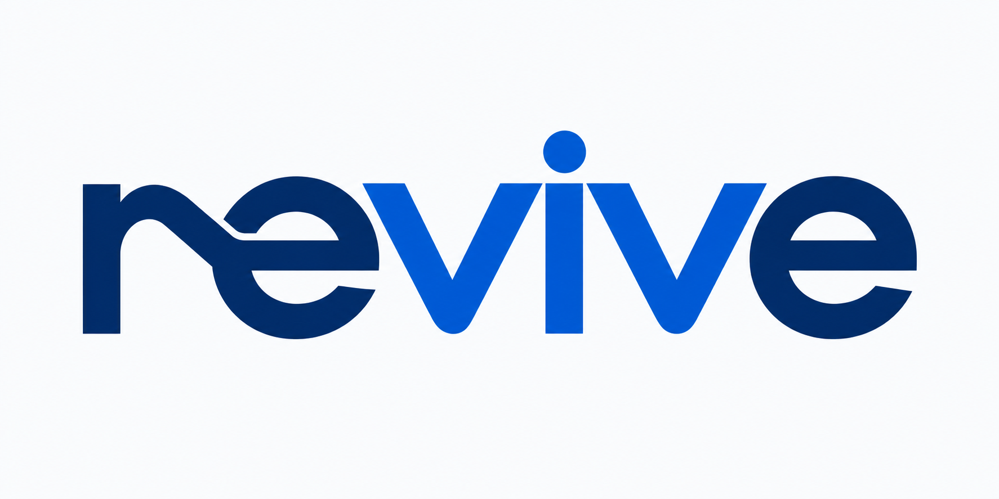
01 Shared stroke
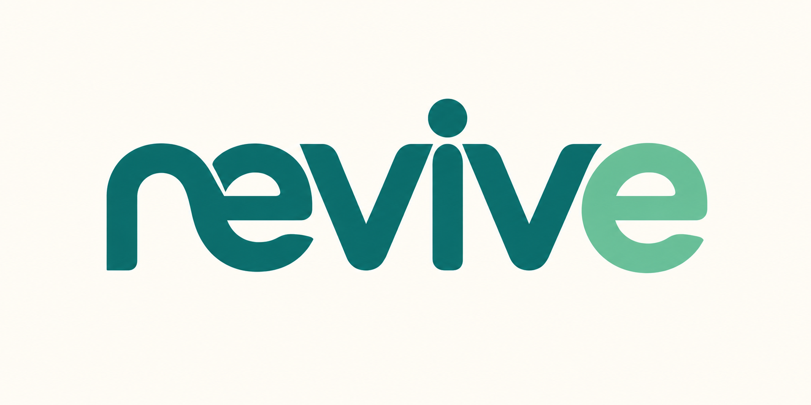
02 Interlocked bowl
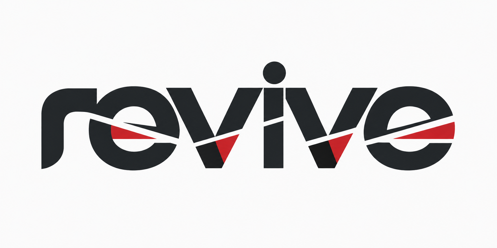
03 Continuous cut
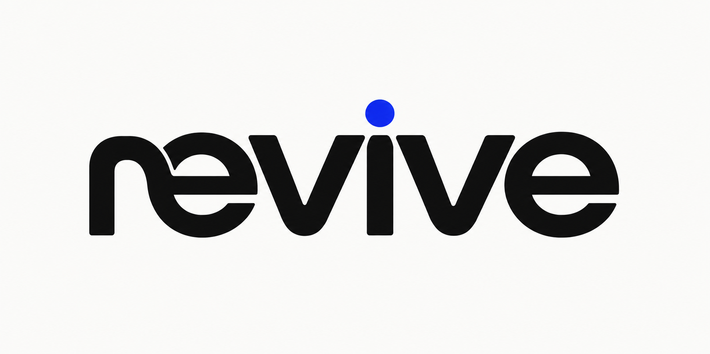
04 Joined ligature
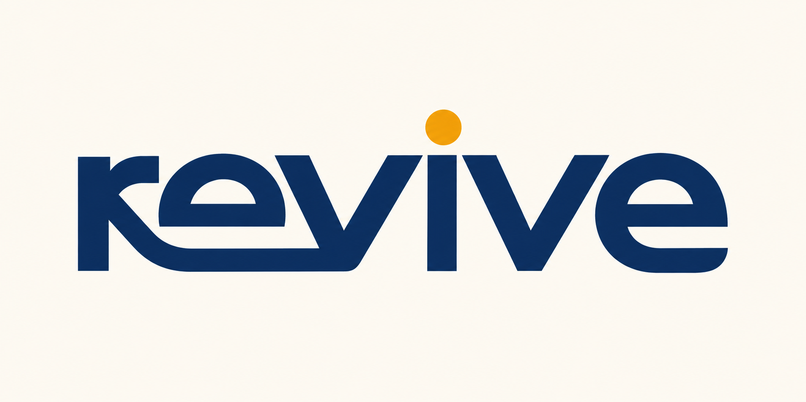
05 Shared baseline
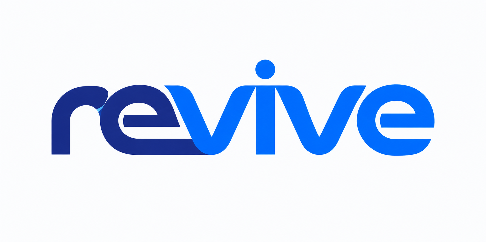
06 Continuous ribbon
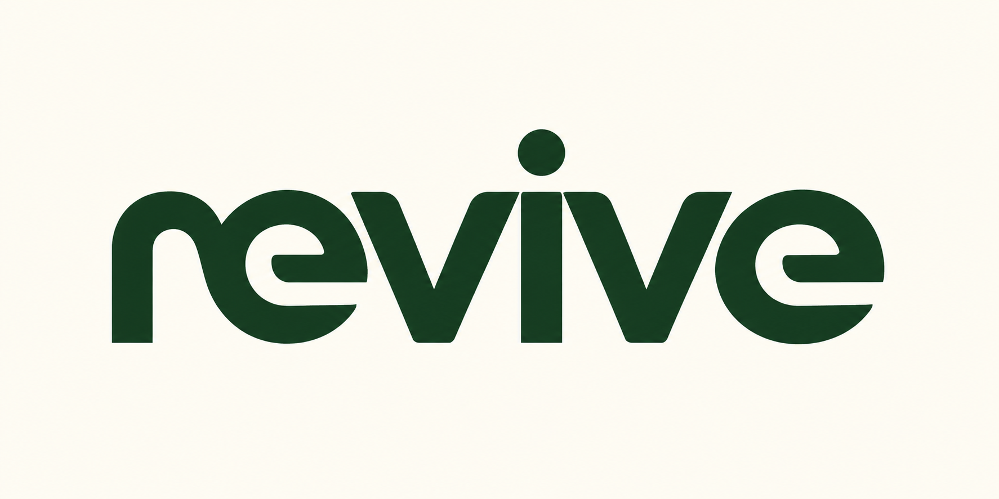
07 Counter motif
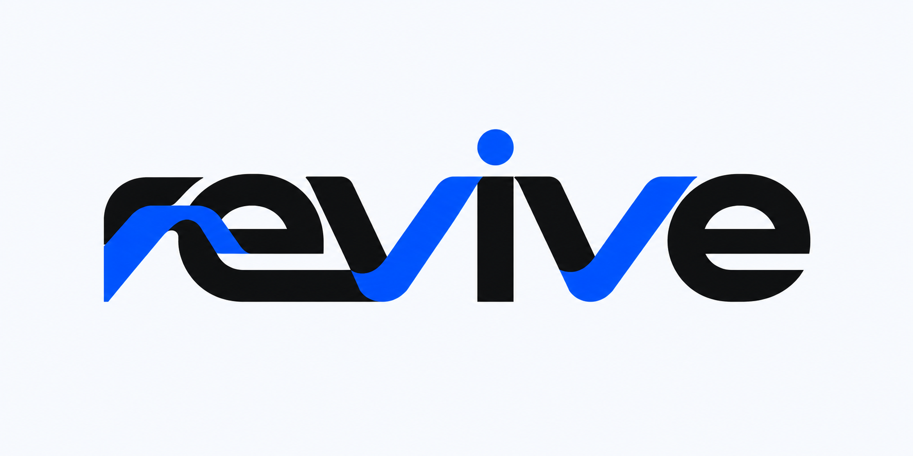
08 Shared spine
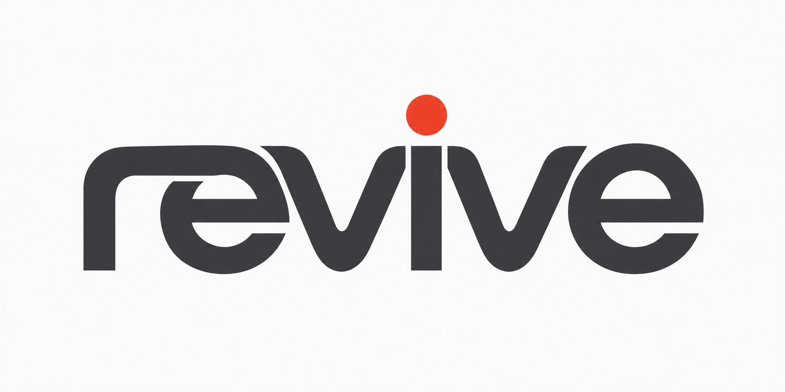
09 Geometric ligature
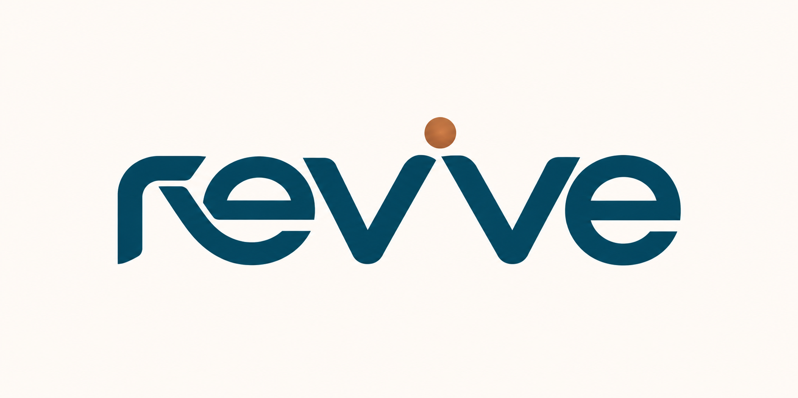
10 Monolithic flow
Refinements to 02 / Interlocked bowl and 07 / Counter motif
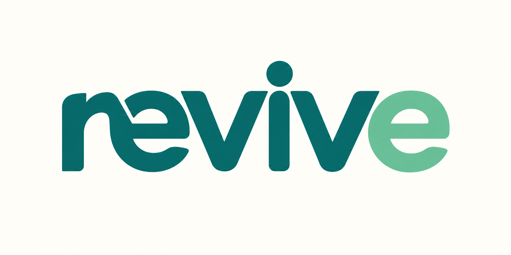
02A Clear shoulder
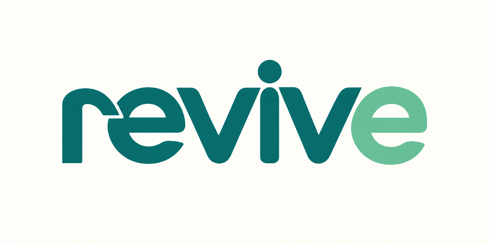
02B Leg into e
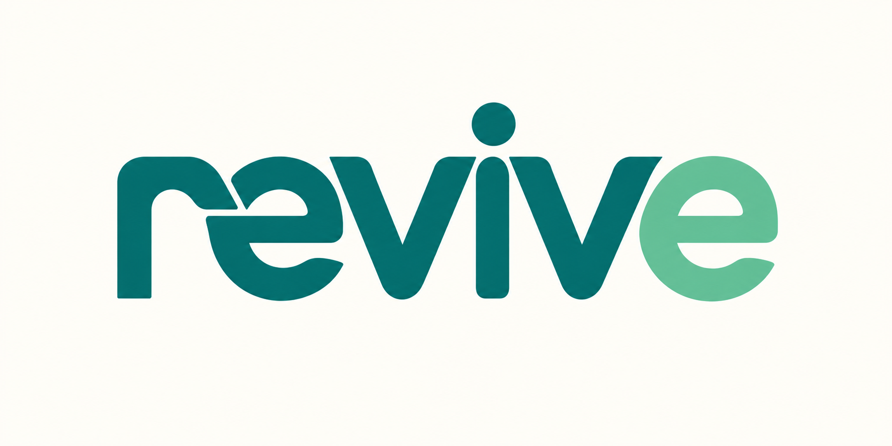
02C Counter bridge
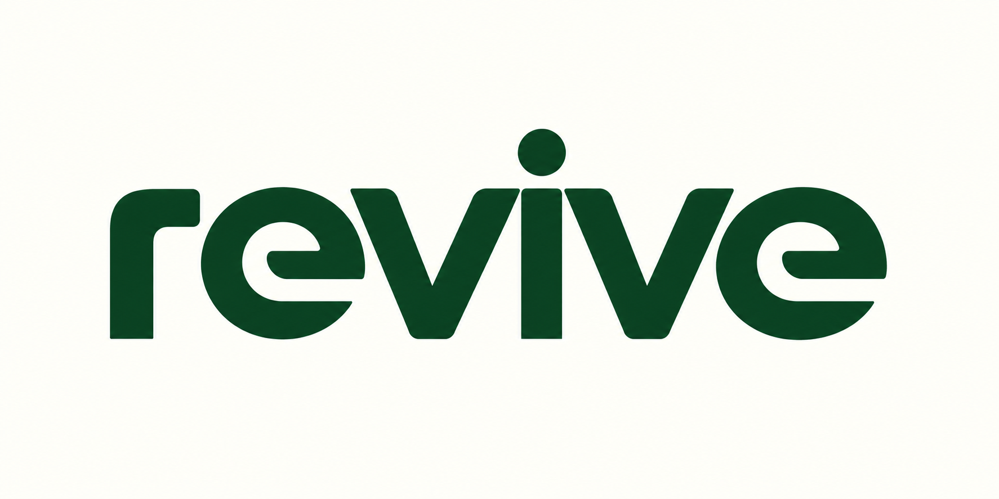
07A Open R counter
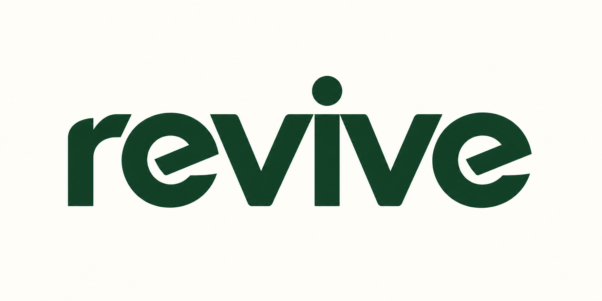
07B Angular shoulder
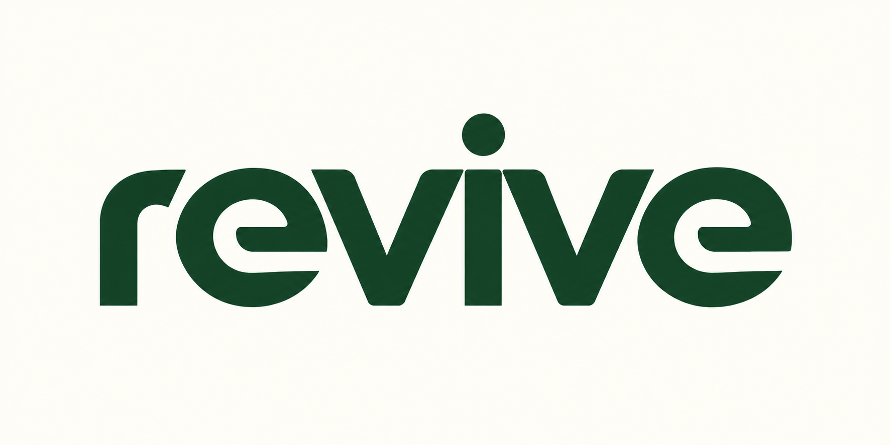
07C Negative-space cue
Fintech refinement / sharper edges and new palettes